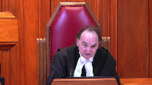
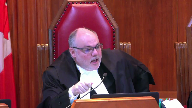

Chandos Construction Ltd. v. Deloitte Restructuring Inc. in its capacity as Trustee in Bankruptcy of Capital Steel Inc., a bankrupt
This transcript was made with automated artificial intelligence models and its accuracy has not been verified. Review the original webcast here.
Justice Brown (00:00:01): The court.
Justice Wagner (00:00:27): Bonjour à tous.
Good morning.
In the case of Chendos Construction Limited against Deloitte Restructuring Inc. in its capacity as trust in bankruptcy of capital, still Inc. is bankrupt.
For the appellant, Chendos Construction Limited, Mr. Darren R. Beganek-QC, Ryan F. T. Quinlan.
For the respondent, Deloitte Victoria Merritt.
And Shauna N. Finley.
For the intervener, Attorney General of Canada, Zoe Oxall.
For the intervener, Canadian Association of Insolvency and Restructuring Professionals, Ashley Taylor.
And Sinsiana Henick.
For the intervener, Insolvency Institute of Canada, Sean F. Collins, Brendan Cain, and Cassidy Thompson.
Mr. Beganek.
Speaker 1 (00:01:33): Thank you, Chief Justice, Madame Justices, Justices of the Court.
Freedom of contract in the commercial context is a fundamental hallmark of our system of law.
While not absolute, courts tend to be reluctant to intervene absent good public policy reasons for doing so.
At issue in this case is whether a single stipulated consequence on breach provision in a commercial construction subcontract entered into in good faith ought to be enforced in a bankruptcy.
The case represents a clash between the enforceability of the provision as a liquidated damages clause, as found by the chamber’s justice, versus the application of the anti-deprivation rule, which stipulates that no provision of a commercial contract or a contract which sees assets removed from the estate of a bankrupt ought to be enforced against a trustee.
Inaudible.
Speaker 1 (00:02:45): It is avoiding preferences and if we look at it in the Canadian context also avoiding transfers of assets under value which we say are now covered by the BIA.
Now the case has evolved a bit into first of all a call for this court to reconsider the classic penalty rule.
That was raised by Justice Wakeling in dissent.
Or to the point and specifically to the case at bar a consideration of the anti-deprivation rule formerly known as the fraud on the bankruptcy rule and its place in Canadian insolvency law.
Does it continue to be part of the rubric of our law?
Was it supplanted by changes to the BIA which we’ll deal with last?
Or if it is still part of our common law, what’s the scope of the rule?
What test ought to be applied in looking at whether or not a provision in a contract violates the rule?
My argument is largely going to be broken into two pieces.
First, I submit that the majority erred in not looking at the contractual matrix in this case and evaluating what in effect the clause does.
Regardless of the test one applies, whether it’s the effects test that was that’s urged on the court by the respondent or a purpose-based test, one still has to look at what the provision does to determine if there is in fact a deprivation.
We say that the majority erred in not taking that step.
Secondly, they erred in not taking the step in agreeing with justice Nelson at first instance who found this provision in question to be a legitimate liquidated damages provision which gave rise to set off and therefore does not render the provision a deprivation to the estate in bankruptcy.
In the bankruptcy context, I submit that in ignoring the purpose of the contract and relying on an effects-based test, they’ve essentially ignored what this court and now what parliament has discussed or implemented, the concept of good faith in contractual performance and in the insolvency context now the concept of good faith which is a duty and obligation imposed on all actors in the insolvency arena as of November 1st of 2019.
Finally I’ll touch on whether the changes to the BIA in 2009 supplanted or eroded the anti-deprivation rule as it’s become known through those amendments, not just with respect to the bringing to the fore the ipso facto clauses for restructurings and personal bankruptcies but also in respect of the additional amendments that parliament made at the time dealing with preferences and transfers under value.
The first step, does this contract create a deprivation?
In my submission the majority narrowly focused on a limited basis on the arrangement between shandos and capital steel itself to limit the effect on the asset pool.
They also failed to consider that while they recognize certain set offs were allowed, the impugned provision, the 10% provision that I’ll call it, is triggered by the same things which trigger the set offs that are imposed and allowed by the majority.
Those were completion of the contract, paying the cost of completing that contract and withholding money for warranty work when the warranty as at the warranty period as at the time we were before the court at first instance had not yet even commenced.
And clues to their thinking are found in our condensed book in their reasons, paragraphs 4 and 5, condensed book tab 2, page 13, first of all, where the court of appeal says, and this is the majority, a trustee and banker see a trustee in bankruptcy has an obligation to take possession of all property the bankrupt refers to section 67.1, which defines.
Overlapping speakers (00:08:01): You say
Speaker 1 (00:08:02): Page 13.
Page 13, tab 2, it’s marked as page 13 at the top, justice. Okay.
Paragraph 4 of the reasons, the first sentence, pardon me, the last sentence of paragraph 4, in addition, a right of set off that existed at the date of bankruptcy, not as a result of the bankruptcy is not affected.
However, they then go on to say a contractual provision triggered only in the event of insolvency or bankruptcy which would deprive creditors of value otherwise available to them and effectively directs the value to an unsecured creditor is void.
And there they rely on air cell which I’ll comment on later in my submissions.
Their conclusions are found at paragraphs 54 and 55, which is page 23 of the condensed book.
Here they note two things.
First of all, the proper approach is to look at the effect of the impugned clause rather than its purpose.
And whether the provision is a liquidated damages or penalty clause is separate analysis.
They then go on and look at the effect of that clause.
Looking at the effect of the clause, this case is not comparable to cooperants where there was no established prejudice to creditors.
Clause 7QD effectively redirects $126,818.39 to Shandos that would have otherwise formed part of Capital Steel’s estate and gives Shandos a further claim of $10,511.66.
Now, fair enough.
But if we look at the actual provision itself, and that is found at tab 3 of the book, and I appreciate that the printing is very small.
So if you have my factum handy, I’ve also quoted it verbatim at page 5 of the factum.
And as you will see, there are four things which occur under this provision, all of which are triggered by the same series of events or events.
Justice Côté (00:10:37): Mr. Beginner, I have a question when I look at this clause.
If I look at QD, you say your position is that it is a liquidated damage clause.
Overlapping speakers (00:10:49): Correct.
Justice Côté (00:10:49): Correct.

But I think we should not look at this clause in isolation.
If I look at qb, b seems to me to cover everything, all the costs to complete the work and not only the cost to complete the work but the overhead and the profit and all of that.
So if I take the position and this is just a discussion, don’t assume anything from that, that everything is covered under qb, how can you say that d is liquidated damage clause.
Speaker 1 (00:11:23): if one looks at the entirety of the contractual matrix as justice nelson did at first instance there are additional items that are covered with this clause in my submission that address things other than merely the cost to complete and the overhead to deal with it there are substantial indemnities that shandos has given the owner those indemnities in turn are brought into the subcontract by the language of the subcontract itself those indemnities with the company going out of business and filing for bankruptcy are no longer supportable by the company so in that sense

yes i agree that the costs are covered assuming we have held back enough to cover those costs the cost of warranty may well be covered assuming again there’s enough held back to cover those costs but shandos is completely exposed in my submission for a lack of coverage for the indemnities on a go-forward basis in the event that things occur or arise that the owner considers appropriate to visit upon shandos related to the work that was done by capital steel so in that sense it is in my submission a proper liquidated damages clause and is not extravagant when you consider the percentage 10 as a total value of the project itself which was north of 56 million dollars it’s a very small percentage
but we’re talking about the structural steel contractor
Justice Karakatsanis (00:13:11): What about the fact that the percentage is tied to the original contract price as opposed to a percentage of outstanding work in terms of liquidated damages?
Speaker 2 (00:13:24): Well…
Speaker 1 (00:13:27): In respect of addressing liquidated damages in this context, I would submit that the certainly shandos chose it, it’s a standard form contract, capital steel agreed to it.
But capital steel agreed to it in the context of understanding and knowing what its maximum exposure was going to be in the event that it didn’t complete this contract by going out of business.
Justice Rowe (00:13:53): But you see, Shandos assumes no risk.
Because if they’re bankrupt, they’re gone.
I mean, from Shandos’ perspective, it’s like it’s a capital steal.
I mean, this is a zero, right?
Because I don’t care what the penalty is or what the liquidated damages are.
If I’m already dead, I’m dead.
And so it’s somebody else’s problem.
So you want 10%, 10%.
You want 50%, 50%.
You name the number.
It’s irrelevant.
Speaker 2 (00:14:24): Welp.
Speaker 1 (00:14:27): I appreciate your comment, Justice Roe.
It’s only irrelevant in the event that capital steel assumes it’s going to go bankrupt.
There are other provisions in that contract that trigger it other than bankruptcy like it simply deciding to stop business which would not necessarily eliminate its liability.
Bankruptcy changes that as one of them but bankruptcy was not the sole reason for the inclusion of the provision of this contract.
As we’ve outlined in the material with two extracts that we’ve provided from some articles, one from Hudson’s building contracts which is found at tab 35 and again the liquidated damages article found at tab 44, these types of provisions in construction contracts are not uncommon because they induce performance and regulate risk and provide as we say some certainty with respect to potential liability.
Granted, bankruptcy they may not have an issue.
But if we’re looking at it from a creditor perspective, certainly in the construction realm, the creditors also have access to construction lien legislation.
The 10% number equates to the hold back requirements under the Alberta builders lien act.
So there’s other recourse available to the creditors to address these issues.
But in terms of the requirement to complete and the obligation to complete, there is some consequence for the failure to do that if it’s attributable to going out of business.
And in respect of this particular provision and the concern that we have with the majority’s decision is that they suggest, not suggest, they find that clause d is triggered by the bankruptcy and that any set off which arises as a result of that clause is therefore not allowed, yet in the same breath say that set off is and remains available for the remaining costs, so
the cost to complete, for the warranty and those items that are listed in a, b and c, even though they’re all triggered by the same event.
So there seems to be a flaw in the logic and there’s no real reason given for the differentiation between the three other than perhaps a suggestion that the set off that arises under clause d arises post bankruptcy.
We disagree with that.
Justice Kasirer (00:17:44): Isn’t it more than a suggestion?
Doesn’t the Court of Appeals say that in the paragraphs that you cited that there is a distinction, a rather bright distinction between what is claimed pre-bankruptcy and what is triggered by the bankruptcy, the 10%?
Speaker 1 (00:18:05): Each one of the provisions in clause Q are triggered by the same, if you look at the introductory paragraph they are all triggered by the same event.
In this case factually the company ceased to operate because it filed for bankruptcy.
So each, so then there’s a waterfall of events.
The first is the trustee has given the option to complete.
The trustee didn’t take up the option.
So therefore shandos can complete, shandos can backcharge the costs.
Shandos can withhold 20% for warranty.
Shandos didn’t have 20% for warranty.
It had less than approximately 10% left to withhold.
It could withhold that, complete the warranty items and then provide an accounting but it could still withhold that.
It could, that’s a charge back.
That’s a post bankruptcy charge back because even at the time we argued this matter the warranty had not yet checked in.
The last item granted arises but it arises because of the same triggering events that occurred with the front.
Justice Kasirer (00:19:14): But it’s only in the event of bankruptcy that particular trigger.
Overlapping speakers (00:19:19): If not, that’s what.
Justice Kasirer (00:19:20): No, it is not.
That’s what the court of appeal says but it is not.
Reading of that provision does not say that.
But the justice robot them in paragraph 5 says and so your point is that that mistake, in your view that’s a mistake and that the whole clause should be read as is.
Overlapping speakers (00:19:46): There’s…
Speaker 2 (00:19:47): as a single idea.
Speaker 1 (00:19:49): All right.
Each one of those items is triggered by the same event.
They say that certain setups are allowed because of that event, but the last one is not.
So my submission is it doesn’t logically follow that the last one is ineffective given that it’s caused the cause which gives rise to that being triggered is the same operative event as the other three.
Justice Brown (00:20:18): And that’s just a matter of the same preambular language in Q applying to all those events? Correct.
Justice Kasirer (00:20:26): which in paragraph five, the Justice Robotham cites as, was the clause different?
Speaker 1 (00:20:37): I might as well hit air cell right now.
In my submission air cell is a problematic case and should be approached with caution.
The court of appeal in air cell, the court of appeal in Ontario in air cell had before it a situation where a dealer for bell had gone out of business.
That dealer was owed about $188,000 for commissions.
The dealer also owed bell about $66,000 for phones.
The provision in the contract in bell or in air cell listed a number of events which would entitle bell to terminate and no longer pay commissions.
She was one of them.
But on the facts of the case and the finding of the court of appeal and this is what makes it problematic, the court did not rely on the contract or say that a provision in the contract was invalid and therefore unenforceable.
They said the act of withholding the commissions was unenforceable under the anti-deprivation rule because of air cell’s inability to pay.
So what happened was a demand was made on air cell by bell to pay its outstanding $66,000 amount and as part of that demand letter they said if you do not pay within 30 days we will terminate your contract.
That letter was issued after air cell had filed a notice of intention to make a proposal under the BIA.
So it was arguably stayed or prevented from issuing that letter because of the stay and because of the NOI but didn’t know that had been filed.
So the court at first instance relied on Bramalea and relied on section 65.1 and section 95 of the BIA to say your actions bell were inappropriate, were not going to allow you to withhold the commissions.
Overlapping speakers (00:22:52): page.
Speaker 1 (00:22:52): It went to the Court of Appeal, the Court of Appeal upheld but only on the basis of Bramalea, the anti-deprivation rule.
But what they did in the process was say it wasn’t any specific provision in the contract that gave rise to it.
It was the fact of air cells insolvency that led to them being unable to pay, that led to them being unable to answer the demand, therefore because of the insolvency, so because of the nature of their existence, if you will, at that time, we’re not, we’re going to exercise our right to use the anti-deprivation rule, which is a stretch, which is a stretch because they didn’t specifically rely on the provision, nor did Bell for that matter, they relied on the non-payment.
And I suspect, or one should never suspect, the result is hard to quarrel with.
Justice Kasirer (00:23:57): is difficult.
But in air cell, the closet issue was triggered on the termination of the agreement that could have been for any number of reasons.
It just so happened that it was triggered as a consequence of air cells and solvency like this case.
Speaker 1 (00:24:25): Is that wrong?
There’s a distinction and a slight difference.
The way the court of appeal analyzed it says it was the state of being that triggered it even though the actual state of being wasn’t the reason for bell making the demand.
They demanded simply for payment.
So the agreement could be terminated because of the insolvency.
That’s not enforceable under the BIA.
But they purported to try and terminate because of a failure to pay.
And it was that that the court of appeal said triggered the application of the ADR.
Now, in the construction context, particularly with respect to form contracts, which is what we’re dealing with here, there is a particular way that the court has expressed that we must go about interpreting those contracts.
It’s a break from SATFA.
And that was the court’s decision, your decision, chief justice in Leadcore and Northbridge.
Obviously, there is a different treatment.
And standard form contracts needed to be interpreted consistently.
But I would submit to you that the circumstances of the industry and the contractual matrix that it finds itself in must also be treated consistently.
And if these types of provisions are common or consistent in the industry, it follows in my submission that the creditors who work in the industry ought to be taken to understand that these types of provisions exist.
Justice Rowe (00:26:23): I mean, the problem with provision of this nature is that bankruptcy is triggered, somebody gets their money, the pool of assets to be shared among the other creditors is depleted.
That seems to run counter to the whole purpose and structure and operation of bankruptcy.
I mean, that really is to me the simple problem.
You insert a phrase like this and all of a sudden you get your money first and the other guys standing in line have a claim on a lesser pool as opposed to, sorry, you stand in line like everyone else, which it seems to me is the central idea of bankruptcy, unless you have a secured claim, of course.
Speaker 1 (00:27:18): Well, let me touch on that.
There are a few areas where the anti-deprivation rule wouldn’t be used to interfere with claims of creditors.
Those include secured claims as you’ve indicated.
There’s also trusts, eligible financial contracts which are carved out in the act, but there’s also the right to settle.
And set off is embedded in section 97.3 of the BIA.
And that’s found at tab 40 of our condensed book. Page 260.
And this court also considered the effective set off on the estate in the Husky oil decision which I’ll take you to in a moment.
But second section 97.3 says that the law of set off for compensation applies to all claims made against the estate of the bankrupt and also to all actions instituted by the trustee for the recovery of debts due to the bankrupt in the same manner and to the same extent as if the bankrupt were plaintiff or defendant as the case may be except insofar as any claim for set off for compensation is affected by the provisions of this act respecting frauds or fraudulent preferences.
In the Husky oil decision which is at tab 31 of our condensed book, Justice Gonthier at page 203, paragraphs 60 and 61 goes through his decision on set off.
He goes through what it means and at the end the last sentence of paragraph 60 consequently in this limited sense the party claiming set off has parliament’s blessing for the reordering of his priority in bankruptcy by virtue of the operation of the law of set off.
So in respect of a creditor which shandos is for its cost to complete and its pending warranty work, it is entitled to exercise a right of set off.
Justice Gonthier goes further in paragraph 61 and says you can’t use that to prefer third parties but as between a creditor and the bankrupt debtor it’s completely allowed and has clearly been sanctioned by parliament in section 121.
Justice Rowe (00:30:29): So isn’t the distinction if there’s a pre-existing obligation that can be set off versus one that is triggered by the bankruptcy itself?
As opposed to the bankruptcy happens, everything is frozen, let’s sort things out.
The bankruptcy happens, a liability arises which is then realized upon, in the form of a set off or whatever, and the effect is to deprive the pool of assets of something which would ordinarily be there.
Isn’t the point that the only basis upon which this liability exists is the bankruptcy.
It’s not like something that was, you know, I sold you two cars, you sold me 500 pallets of boxes or something, right?
That’s, I understand that kind of a set off, but something, oh, there’s a bankruptcy, now there’s a liability, now I’m going to use a set off.
Sorry, you just depleted the pool of assets it seems to me by virtue of the bankruptcy.
I don’t know if I’m making myself clear.
Speaker 1 (00:31:42): I understand your question, justice row.
My response is that each one of these items triggers set off but the overall obligation on behalf of capital steel was to perform its contract and complete the job.
The trustee had the option on bankruptcy to assist in that process and complete the job.
That election was not taken up and it did not happen.
So shandos completes.
But the obligation was to complete.
Don’t go out of business, complete your contract.
If you fail to do that, then these things happen including us completing the contract which deprives the state of the cost to do that.
Us withholding money until the warranty expires and we fixed all of the warranty work so we can withhold money to fix that.
That also causes a deprivation.
Where we get to the final piece is whether or not this provision, this fee which uses the word forfeiture, it might be different if it said pay, but uses the word forfeiture creates this issue that brings us before the court.
But all of those things, all of those items create deprivations because the project didn’t or the work that was to be undertaken by capital steel did not get completed.
And each one of those items creates a deprivation.
This one perhaps not one that can be specifically pointed to in terms of a line item of cost, but one that is there nonetheless based on a contract that was signed in good faith, not in anticipation that capital steel was going to go bankrupt.
Justice Côté (00:33:36): So your argument is because here the majority of the Court of Appeal let’s say that the deprivation caused by QB and QC was legal because of 97.3 of BIA, you say the same reasoning should have followed for QD.
Speaker 1 (00:33:53): Correct.
There’s no ‑‑ they were all triggered by bankruptcy.
And the obligation ‑‑ provable claims and that’s the other part of the set off argument, provable claims outlined in section 121 of the BIA deal with claims that arise because of obligations which existed before the bankruptcy.
So even if the ultimate liability is not visited until after, the university still has a statutorily mandated duty to evaluate that claim and determine what is it worth if it’s an obligation which existed as at the date of the bankruptcy.
The obligation to complete the contract existed as of the date of the bankruptcy.
So everything that flows from the failure of that obligation is a claim provable and I would submit to you that that includes the fee under sub clause D.
Justice Kasirer (00:34:51): the use of the word forfeit, relevant?
Speaker 3 (00:34:56): Well…
Speaker 1 (00:34:58): Justice nelson found the use of the word forfeit to be unfortunate, but not determinative He said you one needs to look at the substance of the provision to determine whether or not To interpret that contract to come to a conclusion on what it’s intended to do
Overlapping speakers (00:35:16): speak to a transfer upon bankruptcy.
Speaker 1 (00:35:20): It says forfeit as a fee.
So whatever follows from that we can use the word transfer but it’s not a transfer.
It’s forfeit as a fee.
Now in this case we know that — — — — — — — — — — — — — — — — — — — — — — — — — — — — — — — — — — — — — — — — — — — — — — — — — — — — — — — — — — — — — — — — — — — — — — — — — — — — — — — — — — — — — — — — — — — — — — — — — — — — — — — — — — — — — — — — — — — — — — — — — — — — — — — — — — — — — — — — — — — — — — — — — — — — — — — — — — — — — — — — — — — — — — — — — — — — — — — — — — — — — — — — — — — — — — — — — — — — — — — — — — — — — — — — — — — — — — — —
Overlapping speakers (00:35:38): to me like pay as a fee. Well.
Speaker 1 (00:35:41): So implicit in justice Nielsen’s reasoning he substituted the word pay for forfeit I would submit.
Now, the respondent does not touch on the set off arguments to a great extent.
They do however touch on the contested clause not just in respect of the anti-deprivation rule but they also focus again narrowly on the contract specifically between Shandos and Capital Steel.
They ignore the broad based indemnities that are contained within both the subcontract and the standard form owner contract, the CCDC2, and…
Overlapping speakers (00:36:34): do.
Speaker 1 (00:36:34): I do not note that there are still losses to Shandos other than ones that are readily calculable arising from the failure to complete the work.
Justice Abella (00:36:45): Can I ask you a question specifically and also in principle in this? Yes.
The, Justice Nielsen looked at whether or not the 10% was reasonable in the circumstances.
Overlapping speakers (00:36:58): Yeah.
Justice Abella (00:36:58): Yes.
And on page 9, you’re at the bottom, talked about the value of the total contract.
Overlapping speakers (00:37:04): Yeah.
Justice Abella (00:37:04): at 56 million
and says it comes to.24% of the value.
Overlapping speakers (00:37:10): Yeah.
Justice Abella (00:37:10): And therefore, not unreasonable to have that as a provision.
My question to you is, is there a formulation of the anti-deprivation rule that permits taking into account, as Justice Nielsen did, the reasonableness—and he does it also at the bottom of page 8—the reasonableness of the actual provision in determining whether or not it was properly withheld from creditors?
Other than—I know there’s the purpose effects. Yeah.
I’m just wondering—
Speaker 1 (00:37:46): In my review of the cases and the material I’ve seen nothing that suggests there’s a formula to determine whether what’s the range of reasonableness on a financial basis.

What we do see in cases like air cell as an example, air cell was basically a you get nothing.
It wasn’t we’re withholding 10%.
It was an all or nothing proposition.
We’ll set off against what we owe but we’re keeping everything, 100% of the commissions that are due to you that were earned because of the work you did in selling phones and selling air time on our network, we’re taking 100% of that.
So that’s why I submit that it’s hard to argue with the result in air cell.
It’s 100%.
Overlapping speakers (00:38:40): Uh
Speaker 1 (00:38:40): essentially a hundred percent forfeiture that on any reasonable reading appears unreasonable and inequitable in the circumstances.
Justice Abella (00:38:52): So that’s my question.
Are we allowed in the application of the anti-deprivation rule to consider the reasonableness of what is claimed or is it enough that the consequence is that it deprives creditors of a particular amount?
Speaker 1 (00:39:10): As found by the Court of Appeal majority, it’s an effects-based test.
So in theory, then, one
Speaker 1 (00:39:18): $1 is enough.
And frankly in this case, we don’t yet know whether ultimately, yes, shandos in writing to the trustee said we’re going to rely on this provision, but we don’t have all the numbers in yet on what the warranty costs were.
So it is conceivable that those costs could exceed the amount that we’re holding already, but the decision was made by the Board of Appeal in the face of we don’t know what the costs of the warranty are yet.
We’re simply not going to ever allow you to rely on that provision.
So we know what the costs to complete are.
We had an estimate of that before Justice Nelson.
The warranty period has now run, but we don’t have the laundry list of costs.
So that’s still going to be an issue that we’ll have to sort out with the trustee.
But on its face, the majority simply found that you cannot rely on that provision, period.
It states you’re entitled to this.
We don’t think you are because it’s offside the anti-deprivation rule, but you can’t rely on it.
Justice Rowe (00:40:23): And ordinarily, I would think that whether or not this is a legitimate estimation of damages in advance, in the event of a default, is what you look at as to whether it’s a penalty or liquidated damages as distinct from whether what is captured or not captured by the anti-deprivation rule.
I think it’s a good thing that this is a legitimate estimation of damages in the event of a default, is what you look at as to whether it’s a legitimate estimation of damages in advance, in the event of a default, is what you look at as to whether it’s a legitimate estimation of damages in advance, in the event of a default, is what you look at as to whether it’s a legitimate
Speaker 1 (00:40:50): Both are available to a trustee, the trustee can examine and challenge on both bases, assuming the anti-deprivation rule should be an effects-based test.
Justice Martin (00:41:01): Can you help me out with something?
Is sub D a pain and suffering clause or is there something in sub D that would not be covered by B?
We talk about inconvenience of completing the work using an alternate means.
Now, I would have thought that would involve the time, the energy, the use of resources to find someone else which would be calculable. Yes.
But is there something in D, as I say, I put it under pain and suffering, like just the
Overlapping speakers (00:41:34): Well, he hit it.
Justice Martin (00:41:35): that differs, that is not available under B.
Speaker 1 (00:41:41): In some respects, your question is very similar to a question Justice Cote posed earlier.
The answer is that as found by Justice Nielsen, there is greater liability potential to shandos as a result of capital steel failing to complete its contract.
Those include indemnities that capital steel is now no longer able to fulfill because of its bankruptcy.
So if there were — if a balcony were to fall off the building as an example because the cantilever metal stands that they imposed broke and it fell and it injured somebody, whether there’s insurance is one thing, but there may be indemnities beyond that like repairing it that may not be covered that are not necessarily covered by the cost to complete.
So that’s what Justice Nielsen found as being the primary or one of the purposes behind that particular clause.
So it’s for any potential future liability.
Overlapping speakers (00:42:41): over and above the cost.
That would be a calculable cost, wouldn’t it?
That would be a calculable amount.
Not right now.
No, no, but a future amount.
Speaker 1 (00:42:49): The future amount would be, but shandos would not have the ability to claim that back against the company, capital steel, because of its insolvency, because it’s gone.
It’s corporately dead.
Now, I’m going to move on because my time is ticking here, but in terms of the restatement of the penalty rule, I don’t intend to spend any time on that in my submissions before you today.
As my friends for Deloitte point out, that issue was raised by justice Wakeling during the course of argument.
We’ve covered it off in our factum.
Shandos approached this case on the basis of the existing law, and we believe that justice Nelson properly applied the existing law in finding this provision to be a valid liquidated damages clause.
Overlapping speakers (00:43:48): a penalty.
Speaker 1 (00:43:49): Correct. Well, but
but a valid he upheld it not as a penalty as a liquidated damages clause and therefore was what?
Shandos was able to rely on it.
Overlapping speakers (00:43:59): But he was, it seemed to me…
He did undertake the penalty analysis, yes.
Speaker 1 (00:44:04): Yes.
And that analysis remains unassailed so I don’t intend to touch on it further.
In respect of the anti-deprivation rule and getting back to it, I don’t intend to make any arguments on the reception rule.
That may shorten the time that my friend Mr. Collins has to speak to that issue but I don’t intend to speak to it.
The real issue is what’s the scope of the rule, what’s the test to be applied and finally I’m going to touch on if time permits whether the applicability has been eroded by the changes to the BIA in 2009.
Overlapping speakers (00:44:45): That’s an important point to me, so I just want to signal to you, you better get to it.
Speaker 1 (00:44:50): now.
Thank you, sir.
Anti-deprivation or the fraud in the bankruptcy rule is two parts.
The part that we’re dealing with before the court today is the anti-deprivation rule or the pool accumulation vesting stage.
We’re not dealing with distributions or peripassu.
Justice Côté (00:45:08): So you disagree with the Attorney General of Canada, who in his factum says that both branches, if I can say, are engaged, Paris-Passu and Etiol.
Speaker 1 (00:45:18): Correct.
This is the accumulation stage based on a set off argument which in Husky Oil makes it clear it’s at the accumulation stage.
Yes, it does have the intent of or the effect of reordering priorities, but it’s all about what comes into the estate.
Overlapping speakers (00:45:36): Okay. First.
Speaker 1 (00:45:37): and then distribution.
So bail and horizon earthworks are not engaged in my submission.
Those cases have been beaten to death in literature.
But it’s not engaged in my submission.
Now, as I’ve already indicated, there are several exceptions to the anti-deprivation rule.
Secured claims set off trusts eligible financial contracts.
But in each instance, there’s a deprivation.
But in each instance, they get evaluated based on the general law.
So if the trustee is looking at secured claims, it looks at whether or not the security interest given by the bankrupt was valid and enforceable against the trustee.
It looks at proper execution of documents, was consideration given, with registrations affected, is the security valid.
But it doesn’t look at the anti-deprivation rule.
Similarly for set off, it advances a claim for a receivable, then there’s an issue.
In this case, they raise the anti-deprivation rule.
Then there’s trusts, but trusts are evaluated on the basis of the common law.
There’s a method for proving trusts under the act.
And then, of course, you have other things.
But notwithstanding those exceptions, as I’ve said, the ADR is not engaged to address them.
Now, in England, this test or this rule has been modernized by the UK Supreme Court’s decision in Belmont Park, keeping in mind that the rule developed over centuries and evolved before there was rigorous preference legislation that was brought in in the United Kingdom.
McKay is one of the leading cases.
And while I won’t take you through McKay in detail, I think the timeline of events in McKay is very interesting because everything happened within a four-month window.
So a very significant transaction which saw licenses being granted, loans being made, payment mechanisms set up appear to have occurred on the eve of insolvency.
That’s the language we would use now.
Over a four-month timeframe, the documents were signed on March 30th.
The bankruptcy occurred on July 29th.
So there were other things at play in that case other than simply the fact that somebody appeared to take advantage of an unfortunate situation for the bankrupt in that case.
But in the Belmont Park decision, the court modernized the rule.
And in my submission, the modernization of the rule was timely and is not something that this court ought to ignore.
What in effect they did was say the modern tendency is to uphold commercially justifiable contractual provisions which have been said in the past to offend the anti-deprivation rule.
The policy is clear.
But they do say it’s possible to give a common sense approach to the application and uphold those types of transactions which do not have as their predominant purpose or one of their main purposes the deprivation of the property of one of the parties on bankruptcy.
So the law in the commercial context is that commercial arrangements that do not have as their primary purpose a deliberate attempt to deprive the debtor of assets in insolvency are upheld and do not run afoul of the anti-deprivation rule.
Justice Abella (00:49:32): How is that purpose determined?
Is it an intention test?
Do you look at the document?
Do you look at…
Overlapping speakers (00:49:40): Thank you very much.
Justice Abella (00:49:40): results to see whether the purpose was in fact legitimate.
Speaker 1 (00:49:46): In my submission, you would approach it as you would approach the interpretation of any contract between parties and that is you look at the circumstances that engaged them in their relationship, the factual matrix giving rise to the contract and how it was otherwise performed to interpret what the true intention of that provision was.
Justice Abella (00:50:11): So if it had been 70% instead of 10%, for instance.
Speaker 1 (00:50:16): Right.
That would come into play in consideration when looking at if you’re considering it on a penalty basis or by analogy looking at the penalty material, that’s what you would take into account.
Justice Abella (00:50:30): You mentioned previously this is a construction contract.
Is industry practice relevant to purpose?
Speaker 1 (00:50:39): In my submission based on lead core, industry practice is always hard to nail down.
There’s a wide range of what’s in practice.
Industry use is still important to consider.
If we consider that these types of provisions are utilized in the industry to ensure performance and cap the liability risk, then those circumstances need to be taken into account when evaluating the contract.
Justice Brown (00:51:11): I read Lord Collins’ speech as acknowledging that the anti-avoidance provisions they were dealing with didn’t displace the common law.

Am I reading that correctly?
That they did not displace?
That they did not constrain the common law rule, as he put it.
Speaker 1 (00:51:29): That’s correct.
He did say that.
He did say though that in the commercial context it needs to be modernized in a narrow way to look at the purpose behind the provision.
He’s not necessarily getting rid of a 200‑year‑old rule.
He said that specifically.
Overlapping speakers (00:51:49): Well, and the reason he said that was because it covered different ground.
Speaker 1 (00:51:52): Yes. Yes.
It does cover different ground.
Does that tell us anything about these provisions?
In particular?
Justice Brown (00:52:04): It’s sort of the incremental expansion of the ipso facto.
Overlapping speakers (00:52:09): Oh, well, if…
Justice Brown (00:52:10): Justice Wakeling saw that as displacing the common law.
Speaker 1 (00:52:16): he sees the imposition of the BIA provisions as displacing the common law.
I see that.
And the negative implication rule and statutory interpretation is a bit of a slippery slope because it’s difficult to determine whether or not parliament did direct their mind to specific issues although parliament is taken to understand the law.
If we look at what they did in this case, though, and I’ll touch on that right now, Justice Brown, they brought in the provisions to deal with restructurings and personal bankruptcies.
In each of those instances there’s an anticipation that, well, in personal situations the person will survive their bankruptcy and will continue on.
In restructurings the intent is to have the companies survive and continue on.
So you bring in a pause, prevent people from doing things which might otherwise impact the ability to continue on or do a viable proposal.
And in the restructuring case and this is where I disagree somewhat with my friend from the Attorney General, the creditors then get to decide whether these types of provisions are things they want to look at or things that ought to be set aside or whether they’re in favour of them because they can vote on them and they can order their votes and do all sorts of things that can develop them.
In my submission and where I agree with Justice Wakeling is that the majority doesn’t look at the other provisions of the act that were brought in at the same time nor does it consider the other tools that are available to a trustee aside from the anti-deprivation rule such as the transfers under value, the preference provisions that we find in sections 95 and 96.
All of which in my submission give the trustee powerful tools to set aside transactions which occur before bankruptcy but there’s nothing that precludes the trustee from saying in a case such as Bramalea as an example where there’s a provision in the contract that allows a partner to buy an asset at book value when its fair market value is 2 million for a trustee to say we’re not going to complete that provision or that contract because the transfer under value provisions of the BIA wouldn’t let you do that prior to the bankruptcy.
We’re not going to complete that in a bankruptcy.
We want you to pay the value that we say you’re required to pay which the trustee is entitled to do and therefore that takes care of Bramalea.
So if we look at it in that context then in my submission there is significant merit to what Justice Wakeling says.
Overlapping speakers (00:55:16): that.
Speaker 1 (00:55:16): that parliament didn’t specifically say, no, there’s no anti-deprivation rule, but they brought in provisions which gave the trustee tools to deal with these things without having to look to an effects-based task which the majority found here is applicable regardless of its purpose, regardless of the fact that was entered into in good faith, and regardless of whether or not it truly needs to be relied upon to hold back the money.
And so that’s why we say parliament made a specific choice.
They could have gone the American way.
All of these provisions are invalid, period, or the Australian way, but they chose not to.
Overlapping speakers (00:56:08): Why didn’t the trustee use any of those tools here?
Speaker 1 (00:56:10): You would have to ask the trustee.

I had the debate with Mr. McCabe who I worked with and known for a very long time about whether or not the step should have been taken now or wait.
But here we are.
So we proceeded on a very narrow application with an agreed statement of facts.
And I don’t think either of us anticipated we would be before this court.
Yeah, I could tell from right.
Justice Brown (00:56:37): I could tell from Horizon Earthworks this wasn’t your first rodeo, but so does all that amount do you say, well, in Pioneer we said look, you either have to have an express statement to displace the common law, which you don’t have here, or it has to be by necessary implication.
That seems to me to be a high threshold.
Speaker 1 (00:57:05): Yes, I agree.
It is a high threshold.
And as my friend Mr. Collins will be arguing, there are other remedies that are available to a trustee and the bankruptcy court is a court of equity.
So to say that the court’s jurisdiction is ousted by certain steps that are taken by the Legislature or Parliament is a large hurdle to overcome.
Our position is simply that.
Overlapping speakers (00:57:40): It was overcome.
Speaker 1 (00:57:41): When it is overcome and when Parliament brought in not only these changes but also the tools, it effectively occupied the field.
There may be some room I would submit for a purpose-based test in the event there’s nothing which nicely fits.
But it should still be a purpose-based test.
I see my time is running short
so I’ll wrap up now.
Justice Martin (00:58:02): Just before you wrap up I’m sorry I got to go back to the question I asked you.
Overlapping speakers (00:58:07): Yes.
Justice Martin (00:58:07): You took me out to see when I asked you is this pain and suffering you said no no there could be contingent liabilities based on monitoring and Guarantees and indemnities you went through a hole.

I thought it was a simple yes, or no, but it wasn’t obviously Why doesn’t sub see cover exactly what you took me out to see on?
Which gives you up to two hundred and eighty thousand dollars that you can hold back?
Because the very things that involve guarantees and indemnities and so on because we didn’t have 280,000 to hold back
Speaker 1 (00:58:41): whose problem is that?
Obviously shandos.
Shandos is only required by law in Alberta to withhold 10.
Stay with me.
Justice Martin (00:58:50): Guys, you answered my question by saying, oh, there could be contingent liabilities, if I understood you correctly, and you related it specifically to guarantees and indemnities.
You have a specific clause in this contract that allows you to hold back up to $280,000 approximately for this very thing.
So why should I accept your answer that somehow D adds to the pot?
Speaker 1 (00:59:19): In my submission, Justice Moldaver, the reason you should accept that submission is because there are once the warranty period expires, which is what c is in relation to, once the warranty period expires, there may still be potential liability that shandos is visited upon it as a result of, say, a catastrophic failure which may cause or could have caused injury in the Winnipeg condominium sense of the law on a tortuous basis.
So it isn’t specifically there to cover the warranty, Justice, but it is there in my submission to cover things that happen after the warranty period that may be visited upon shandos.
But once the warranty period is expired, we would not be, we would have to do an accounting with the trustee and in the absence of sub clause d, pay over any balance if there is to the trustee.
Justice Côté (01:00:24): time of the bankruptcy I understand that there was no more 20% to withhold.
Overlapping speakers (01:00:28): Crap.
Justice Côté (01:00:29): Because you had paid more, so you had less than 20% to withhold at the time of the bankruptcy.
That’s correct.
Speaker 1 (01:00:38): My final statement.
This court has seen fit to affirm that performance of contracts must be undertaken in good faith.
Parliament has seen fit to bake into the insolvency legislation that actors must perform in good faith.
In my respectful submission, if we throw good faith out the window when it comes time to dealing with contracts which may have an effect on a bankruptcy estate but contracts nonetheless which were negotiated in good faith, then we’re sending a signal to the commercial world that if you’ve done all those things in good faith, wait a minute, in a bankruptcy it may not matter.
And in my submission, there ought not to be a rule which allows that to happen.
Justice Abella (01:01:34): Is good faith enough or does it have to also be reasonable in the circumstances?
Speaker 1 (01:01:38): I would submit to you that if we look at the purpose, the purpose has to be not one which is such that it’s intended to deprive the estate of an asset.
Justice Wagner (01:01:51): Thank you very much.
Thank you.
The Court will take its morning break.
Fifteen minutes.
The Court, the Court.
The Spirit.
Justice Kasirer (01:03:02): Morning.
Speaker 4 (01:03:04): I will be speaking first.
My name is Ms. Shawna Findlay, and I intend to speak for approximately 50 minutes, after which my colleague, Ms. Merritt, will address a few remaining points.
Before I begin, I want to address the issue raised by Mr. Justice Brown with respect to why the trustee did not take advantage of the sections in the BIA that allow the trustee to challenge transactions for fraudulent preferences or proceedings or transactions under value.
Mr. Baganek knows Mr. McKay very well, and he was involved, and I cannot read his mind.
But I suspect that part of the reason might be because, of course, those provisions deal with transfers and transactions that have taken place in this case.
As similar to the case to the facts in Aircel, we’re talking about a circumstance that arose, the financial ramifications of which haven’t been already worked out.
This was, in part, an accounting exercise.
And so there’s been no transfer of value as of yet, because, of course, the transfer of value occurs essentially on the enforcement of clause QD.
Similar in Aircel, we’re talking about a clause that, on its operation or when it would be determined to be enforceable, is what would create or permit Bell to withhold amounts that we’re owing to Aircel.
So it’s dissimilar to what it appears those provisions are dealing with, which is where there’s been a transaction.
Value has been transferred.
And afterwards, the trustee is able to then point to that and say, no, we think that actually occurred under value or it was a fraudulent preference in order to prefer a creditor.
This situation is different, because it evolves and we’re talking about more of an accounting.
The other point to make about that is, of course, those are time limited.
So in a case like this, when you’ve got a provision in a contract, which may have been entered into 12 months, may have been entered into 14 months or an extended period of time in advance of the triggering activity, when would you say the deprivation occurs?
Is it when they signed the contract and agreed to that?
Or is it when the clause is actually operative?
Our view is that, of course, the anti-deprivation rule plays an important role, because it looks at the effect of a statutory provision and broadens the trustee’s toolkit to be able to look at transactions in their effect and determine whether or not the anti-deprivation rule is engaged, which, of course, we say it is here.
Justice Abella (01:05:59): Can you give me an example of the kind of provision in a contract that deprives creditors of the possibility of access to an asset or an amount that would survive the anti-deprivation rule?
Speaker 4 (01:06:17): I think that when you’re, well, a good example would be a provision in a contract that is compensatory and the provision QB in this case is a good example of that where Parliament has said we agree that there can be a set off.
So when you’ve got a contract which required execution into the future and the contract then or the contractor is unable to complete because of the intervening event such as a bankruptcy then where set off would step in and say you can set off those mutual obligations then that would be an example where yes there’s a deprivation but Parliament has indicated that is agreeable that that occur in that sense, it’s fair.
Justice Côté (01:07:10): Why is it not possible to have QD part of that set-off because you say set-off is perfectly legal under QB?
But what about QD?
Speaker 4 (01:07:21): I think the problem with qd is that our position is that on a proper reading that provision isn’t compensatory.
So the law of set off is incorporated into this through section 97, but you still have to be able to set off those amounts properly.
So you could legally set them off if they were liquidated amounts, or you could be, you could have reference to equitable set off, which when the obligations are so mutually related that you’re entitled to set them off, then you would be able to do that.
Justice Abella (01:08:00): with respect to if the purpose is set off then it’s okay
but if the purpose is not set up then it’s not okay
Speaker 4 (01:08:09): No, you have to look at what is actually being set off, you have to look at the substance of what’s being set off.
So with respect to clause B, you’re talking about setting off costs that but for the bankruptcy, Capital Steel would have had to, Capital Steel would have had to respond.
It would have had to complete the contract.
Shandos now has to do that.
There’s a mutuality of those obligations.
That’s quite different when we talk about clause D because as we say, clause D is not compensatory.
It identifies that it’s compensating for things that are already covered in clause B.
And so what in effect clause D does is simply reserved to Shandos without explicitly saying so in the contract.
It reserves to Shandos an extra cushion, a cushion of financial cushion to according to Shandos then allows it to apply it however it sees fit.
Justice Côté (01:09:14): Because B is to complete the contract, D your friend said that it was a fee for inconvenience as the contract says and also for the work which may be incurred under the guarantees.
So how can you say that there is no compensatory aspect to that?
Speaker 4 (01:09:38): With respect to that, I come back to the statements that this court has made about how you interpret a contract and that you cannot overwhelm the words of the contract by imposing a meaning upon them, which I submit is exactly what the appellant and Justice Nielsen in a way did.
They said there’s all these other liabilities that we think may arise and therefore, and Clause D happens to create a pot of money, therefore we can have access to that.
But if you look at the wording of Clause D, that’s not what it’s intended to cover.
Clause D talks of being a forfeiture for two specific purposes, one being inconvenience, which we submit would be covered by overhead, the extra time it takes to perhaps do another tender.
It’s all covered by that.
Then you talk about extra fee for over or for monitoring warranty work.
And we submit that would be covered either by the hold back in Clause QC
or it’s a cost that could be captured by B.
And so then when you look at the actual words used and then you look at what the contract provides for in its entirety, including the provisions as my friend referred to, the insurance provision, you can’t shoehorn into Clause D all of those additional liabilities and risks into Clause D.
And the question is not what has actually occurred and what has been held back and what hasn’t, but what would the reasonable person understand that they were agreeing to in Clause D that it is, and what was it intended to cover?
And I think if we looked at the reverse situation, you could say, well, in the situation that those liabilities came to pass, would Shandos, would Capital Steel then be able to say, well, look at Clause D.
You’re entirely covered by Clause D by a 10% hold back for all of those liabilities that could arise.
And my suggestion would be that someone would say, oh, no, no, that’s not what we understood that clause to be because that’s limited.
It’s limited to inconvenience and it’s limited to monitoring for extra work.
Why would you assume that that’s covering all these additional liabilities?
And I think when you take a step back and look at the entire contract and look at the words that are used, it’s very difficult to come to a conclusion that this clause was essentially to do that, just to create a pool of money that can be applied to whatever.
Justice Martin (01:12:21): May I ask you a general question, though?

So as I understand it, you’re basically arguing that this is not a genuine pre-estimate of damages.
It’s not a proper liquidated damage clause in d, properly understood according to the principles that you say we should apply.
Understood.
I get that argument.
But if it is, if a clause is a genuine pre-estimate of damage, does that take it outside the anti-deprivation rule? Yes.
Speaker 4 (01:12:51): Yes, we would say that if there was a liquidated, if there was a proper liquidated damages clause here, for instance, if clause D had listed all of those things and then there was an amount there, subject to it being reviewed for being completely outrageous, yes, we would agree that you would be able to set that off.
The issue here is we have B which is not a liquidated damages clause.
It’s a damages clause.
It allows you to claim for all of those damages.
But then we have D.
And D’s operation in this instance is in the context of a bankruptcy.
And that’s a really important factor here.
So with respect to freedom of contract and those principles, we have a clause here that perhaps in other circumstances may or may not be enforceable.
But we’re talking about enforcing it in the context of a bankruptcy.
Justice Martin (01:13:52): I think that’s important.

Could I just interrupt for a second?
No one has talked about clause a in this thing.
And clause a, unless I’m misreading it, includes situations that have nothing to do with bankruptcy where they just decide to close their doors.
Doesn’t mean they’re insolvent necessarily. Correct.
And so there would be no impediment to clause d if it was not a penalty clause from applying.
So I mean, but here we’re dealing with clearly an insolvency.
Speaker 4 (01:14:24): That’s exactly right, and when you, some of the articulated reasons for having a clause like that, such as it inducing performance in that scenario when you’re talking about a bankrupt party, of course, those laudatory goals are not achieved.
And when you’re talking about a bankruptcy context, of course, that, the generosity of clause D comes on the backs of creditors.
It reduces the pool, and it reduces the pool for all creditors to be able to claim against.
Justice Wagner (01:15:03): That’s why I don’t understand your nuance when you say that a proper liquidated damages provision would remain outside ADR.
Should that be covered by?
Speaker 4 (01:15:17): I think that’s a very good question and I think that really gets back to the fact that set-off is excluded under this under the statute and so to the extent that you had a liquidated damages claim that that under the rules of set-off you’d be entitled to set it off then I think I think you would be okay and if it was a genuine pre-estimate of damages then you could you could argue that those damages are closely enough related to the performance of the contract and then the failure to perform the contract that it’s equitable that those amounts be set off.
Overlapping speakers (01:15:55): Is that what the Court of Appeal said?
Speaker 4 (01:15:57): No, the court of appeal did not say that.
What the court of appeal did in this case is that the court of appeal did not say that the court of appeal did not say that the court of appeal did not say that the court of appeal did not say that the court of appeal did not say that the court of appeal did not say that the court of appeal did not say that the court of appeal did not say that the court of appeal did not say that the court of appeal did not say that the court of appeal did not say that the court of appeal did not say that the court of appeal did not say that the court of appeal did not say that the court of appeal did not say that the court of appeal did not say that the court of appeal did not say that the court of appeal did not say that the court of appeal did not say that the court of appeal did not say that the court of appeal did not say that the court of appeal did not say that the court of appeal did not say that the court of appeal did not say that the court of appeal did not say that the court of appeal did not say that the court of appeal did not say that the court of appeal did not
Overlapping speakers (01:16:04): So are you asking us to affirm the court of appeal or not?
I’m a little confused here.
Speaker 4 (01:16:09): Absolutely.
I’m asking you to affirm the court of appeal in case I was not clear.
We do think you should.
And while they did not do that explicitly, implicitly, that’s what they’re doing in clause 55 in their concluding remarks where they apply the anti-deprivation rule to the circumstances at bar.
And that is at tab 6 in our condensed book.
And if you look at the very top of the page, it would be at page 32, where what the court does is it looks at the effect of clause d and it says that it essentially what they’re doing is looking at the very effect of it.
And they’re saying what it does is it effectively redirects funds that would otherwise go to shandos, sorry, that would otherwise form part of capital steals estate and gives those funds to shandos.
And the court then goes on to talk about the other provisions of clause q, which might do that.
And I think what’s really critical here is but for clause q, that money would go to capital steals estate.
There’s no other reason like failure to complete the contract or other matters that would pull those funds back from flowing to the estate.
But in clause d, it’s completely gratuitous and noncompensatory.
And that’s really the problem with the enforcement of clause d in this case because that kind of clause that has that effect is what we say offends the anti-deprivation.
Justice Rowe (01:18:15): I’m not so sure whether that’s what the Court of Appeal said and this is why I feel like the ground is moving in under me a little bit here.
If I understood the logic of the Court of Appeal and perhaps I’m mistaken, they said that the anti-deprivation rule would cut off the operation of d whether or not it was a penalty or whether it was liquidated damages.
That’s a question which comes later in the sequence.
You only get to that question if you say the anti-deprivation rule doesn’t exist or you perhaps give it a purpose of meaning as a bell mount or whatever.
But if I understand the Court of Appeal correctly, they say a, the anti-deprivation rule exists and it properly applied would not allow d to be given effect because, as they say in 55, while Shandos undoubtedly has legitimate commercial interests it was seeking to protect, it would conflict with the BIA’s scheme of distribution if Shandos could elevate itself to a preferred status through such a contractual arrangement.
It doesn’t say such a contractual arrangement if it’s a penalty, it’s such a contractual arrangement.
The common law anti-deprivation rule invalidates clause qd and Shandos cannot rely on the provision in defence of a claim for payment by the trustee.
Speaker 4 (01:19:43): Agreed. Agreed.
And I think what’s important is to look at the previous sentences in which they do recognize that other provisions of clause Q address the ability of Shandos to complete the work and to recover the cost to complete the work.
And so all I’m saying is that had the parties agreed to a liquidated amount for that cost then I think that would have been fine, but I think it’s very important that the Court of Appeal reviews these other provisions before coming to D to say that provision cannot survive.
Justice Martin (01:20:26): and you’re saying that that would be fine as a liquidated amount even if it was expressly triggered in the contract by bankruptcy.
Speaker 4 (01:20:36): if it were a liquidated amount that under the under section 97 they would be entitled to set off and if that amount if they had if they had articulated what that amount could be and they weren’t and they were they satisfied the other tests for set off.
Justice Rowe (01:20:53): You seem to be saying to us that the anti-deprivation rule only applies to penalties.
Penalties are not enforceable anyway.
I mean, have I…
Am I just misunderstanding you, or are you fundamentally departing from the logic of the Court of Appeal?
Speaker 4 (01:21:09): No, I would say I’m not fundamentally departing from that logic, because what we’re saying is that regardless of how you characterize a clause, if it removes value, like, you have to give effect to the statutory provisions of the BIA, including the provision with respect to set off.
But there are circumstances where potentially you could have a clause that isn’t determined to be void as a penalty, but still operates to remove value from the estate in bankruptcy, which is not permitted by the anti-deprivation rule.
And I’ll give you an example, and it’s found within bail, or perhaps air cell is another very good example.
That clause, had they voluntarily wound up, then there might have been a debate in that case about whether or not it was enforceable purely as a penalty, and it may have been found enforceable, it may not have been.
But in the bankruptcy context, there’s a different standard that applies and a different rule that applies, which says if it removes value that otherwise would have gone to the estate of the bankrupt, then that is not permitted.
Another good example is the case of bail, where you had an agreement which allowed, which is referred to as a peri pursue case, but in a way also engages the anti-deprivation rule, in that you had parties for very good reasons agree that the contractor, and it was in the context of a construction contract, and in the contracts, the contractor was permitted to pay the sub-subcontractor.
So if it owed money to the subcontractor, but the subcontractor wasn’t paying the sub-subcontractors, it could make payments to the sub-subcontractors and withdraw those amounts from the amounts owing to the subcontractor.
The Supreme Court of Canada said in bankruptcy, you can’t do that, because what it does is it prefers the creditors of the subcontractor, it prefers those creditors that are getting paid, the sub-subcontractors, and it doesn’t allow money to flow into the estate and then out to the unsecured creditors on a peri pursue basis.
So that would be another example where we’re not dealing with penalty, we’re not dealing with the exact circumstances that arise here, but we’re still dealing with a contractual circumstance which is for good valid reasons and could operate outside of the bankruptcy context, but once we’re in the bankruptcy context, it cannot, because it offends the principle that once you go bankrupt, all of the property properly vests in the trustee, and that it is contrary to the goals of the insolvency regime, which are to maximize the value of the estate and then pay it out to creditors pursuant to the legislation and the common law, it offends that if you have a clause that allows you to defeat it, which is exactly the circumstance we have here.
Justice Karakatsanis (01:24:40): Can I, I just want to make sure I understand your position. Yeah.
You’ve said if it was a proper liquidated damage, then it’s outside of ADR.
But you’ve also said, I think, that you, applying an effect-based rule, it may be that it, it would be subject to the, um, anti-deprivation rule, but then applying the set-off under section 97, the equitable set-off, it, it would, um, be permitted, uh, if it’s integral to the obligations underlying the contract.
So that in this case, Q, uh, D, B and C would be permitted in your analysis, uh, as an equitable set-off, not because it didn’t offend the, uh, ADR rule, but because equitable set-off is allowed under section 97.
So there’s two different ways of looking at it.
At one point you said it’s outside the ADR, but I think I hear you saying no, effects-based it would be caught, but then you look at the statute which allows an equitable set-off for those kinds of costs that actually are required to complete the underlying work. Correct.
Speaker 4 (01:25:58): So it’s the latter.
It’s the latter.
That’s right.
Justice Martin (01:26:03): Can I ask you another question about that, about things that an effects based test that otherwise would have, a property would have gone into the estate.
And here we’re dealing with contractual provisions and you quoted other cases that are dealing with commissions or contract compensatory things.
But what I’m thinking about, what I’m trying to play through in my head are the type of contractual provisions that basically deal with ownership interests and goods.
So if you had buyers and sellers and a seller says the property in this will not vest in you until you have completely paid, that’s a provision of general application.
In your effects based test stated as broadly, wouldn’t that catch that kind of piece of property because it would otherwise have been in the estate of the bankrupt.
But nevertheless there’s still this whole other regime, a settling of the price of the goods, all of that on a basis that there is a risk allocation that ownership won’t transfer to us.
So how do we deal with an effects based test as broadly as you’re contending in those kinds of other type of contracts that effect ownership.
Speaker 4 (01:27:22): That’s a very good question.
It obviously doesn’t arise on the facts of this case, but to a certain degree that gets into what has been part of the law in the United Kingdom in terms of flawed assets and whether or not, and in the UK the approach had been that if it was a flawed asset circumstance where property didn’t vest until, you know, something triggered and then if bankruptcy triggered that it would not vest, that was OK.
So in your circumstance under the laws that had developed in the UK, in that circumstance that would not be caught by the anti-deprivation rule.
In Canada we have not seen that kind of a distinction.
Now of course in Belmont essentially they come to the conclusion that that distinction is now one with no longer with a difference and we should not be looking at those two things separately and that gets us into the intent or the purpose of this case.
Overlapping speakers (01:28:28): The purpose-based test.
Justice Kasirer (01:28:30): right
and oh sorry
Speaker 4 (01:28:30): right
and oh sorry
so I think in Canada the question is still open and in terms of the way that they had dealt with it in the UK it was that the anti-deprivation rule would not catch that.
Justice Martin (01:28:52): Right, which would suggest how do we deal with that if we’re creating an anti-deprivation rule?
Do we say mostly effects, sometimes purpose?
What would otherwise exist have gone to the estate?
Where does that fit into the analysis and the test that you are proposing?
Speaker 4 (01:29:10): Well, the test that we’re proposing is essentially the test that has been applied in Canada to date, which is you look at the effect of the contractual provision, what it actually does, and it’s hard to say all of the circumstances that could arise in the circumstance that you’re talking about about in terms of what a court would ultimately find.
My sense is that they would have to look carefully at what was occurring.
Did property actually transfer?
And so are we talking about an actual, would the property actually have vested in the estate?
Did property transfer?
And in your example, maybe property did not transfer, maybe entitlement did not transfer, and if it didn’t, then it would not be caught.
Justice Rowe (01:29:54): But are you asking us to formulate a test different from that of the Court of Appeal or to affirm what the Court of Appeal said?
Speaker 4 (01:30:06): I’m not asking you to reformulate the test.
Our position is that the Court of Appeal applied it properly.
Justice Kasirer (01:30:14): I’m gonna ask, just to follow up on my colleague, and, and getting back to this, I’m, I’m sorry I’m slow, the, the, this, your idea that a proper liquidated damage clause would be outside the anti-deprivation rule, if you see, if I, if I understood, I, can we look at the met, is, was there an error of met, in method by the majority of the court of appeal?
This is alluded to in the first argument of your colleagues.
Paragraph 16, Justice Robotham says common law anti-deprivation rule and the rule against penalties are two distinct concepts that must be assessed separately.
Clause QD may be found unenforceable under either of the two rules, and then she goes, she starts with the ADR, and that’s enough.
Is that a correct method in your view?
Overlapping speakers (01:31:16): That’s my understanding of what they did, yes.
Justice Kasirer (01:31:19): I know it’s what they did, but is it a correct method, because there’s a cart and the horse.
Speaker 4 (01:31:27): I agree.
And the way that I’ve set out my comments today, I wanted to deal first with what is the proper interpretation of the clause that we’re dealing with.
And I think that is important because I think without dealing with that, you have to be able to understand whether the law of set off applies.
And if you are confirming that costs under B would be caught, which are the costs that arise because they did not finish the contract, then the question is whether those, instead of just including a damages clause for those to be calculated by the court, could you have included a liquidated damages clause?
That’s one of the questions that’s taking us down this path.
In this case, I think implicitly, the court does consider that because in section, but you’re right, they do it in the reverse because it’s at the end of their judgment that they really look at the clause and say, well, what does it actually do?
The clause covers all of these other compensatory categories.
Then there is this D and D can only offend the anti-deprivation rule because those other clauses deal with those costs that would arise.
Justice Kasirer (01:32:52): Do you think it would have been easier to understand had the analysis of the clause come first before this, announcing the two separate paths?
Speaker 4 (01:33:06): From my perspective, I think it’s, you can understand where they got to on the basis of the judgement as it’s written, but I think what you’re suggesting is another way to have ordered it, but in my view you come to exactly the same result, which is that the anti-deprivation rule applies to clause D and makes it unenforceable in the context of bankruptcy.
Justice Martin (01:33:30): Can I just ask you a question based on Justice Martin’s question to you?
And I think I heard you say that in her example, let’s say that the bankrupt had paid 90% of the value of this property over, but title had not transferred, if I understood you correctly, this rule that we’re talking about, ADR, doesn’t apply at all, but why wouldn’t the court step in and say there’s probably inequitable ownership?
Or there are inequitable interests here that can be valued?
I don’t know why you’re giving up on that one with respect so simply, so easily.
Speaker 4 (01:34:06): I think, as is evidenced by the different facts that you could put into that hypothetical…
Justice Martin (01:34:13): not our case.
I’m not going to hold you to anything.
It just seems to me that we wouldn’t sit back and say, oh, well, that’s too bad.
If you paid 90% of the value of the property but the title hasn’t, surely you’ve got some sort of equitable interest.
Speaker 4 (01:34:28): Well, then I think, I mean, first of all, I think when you’re looking at the law of set-off, you, and if you’re not talking about legal set-off, you are talking about equitable set-off, and you are talking about whether or not that applies.
Now, as per the contract that you’ve, so in the contract example from Justice Martin, the question would also be, well, what, what does the contract provide?
When does it provide that ownership transfers?
And the court would have to grapple with whether or not, so I think what you’re suggesting is that if it allowed for that, that asset to be sucked back instead of transferring to the, to the bankrupt estate, would that offend the anti-deprivation rule?
And I, I think that depends on how the contract is also written.
Justice Rowe (01:35:17): I don’t know if, frankly, the anti-deprivation rule or anything else comes in here, because if I’m the purchaser and I go bankrupt, my trustee can say, I’m gonna pay the last 10%, take in the asset, and sell it for value, or I’m gonna say, it’s not worth paying the last 10%.

You keep it.
I mean, it’s just, you know, it’s real ordinary stuff.
Speaker 2 (01:35:43): Correct.
Good night.
Justice Martin (01:35:48): case too you’re harming the debtor not the creditor.
It’s a totally different situation.
It’s the debtor that’s getting hurt in your example.
Speaker 4 (01:35:58): That’s right, and that would get into whether or not, um, there was something that made that contract unenforceable.
As has been stated many times, the court doesn’t intervene in circumstances where there’s an improvident bargain, but that’s not, that’s not the circumstance that’s engaged here, where we have a contract that’s entered into, which was, as was referred earlier.
When you’re dealing with clauses that are operative on bankruptcy, that kick in when you’re bankrupt, then in that circumstance, the parties that are negotiating can be very generous with those, with what they’re giving up, because of course they don’t have, um, they’re not going to have to deal with the consequences, it will be their creditors.
And that’s part of the policy objective that’s at stake here in this appeal.
Justice Abella (01:36:54): Can I just ask you a simple set off question?
B is okay because it’s set off.
Does that mean that if you have a problem with the analysis of justice Nielsen, but justice Nielsen was essentially saying that D was a set off provision as well.
What’s wrong with his interpretation of what D was for?
Speaker 4 (01:37:20): the effect of d. I think the problem that we have with the reasoning of justice Nielsen is
that it in interpreting clause d.
Justice Côté (01:37:33): Thank you very much for having me.
Justice Abella (01:37:35): as a set off.
That’s essentially what he’s doing.
Speaker 4 (01:37:40): Yes, he’s doing that, but he’s saying that it’s a liquidated damages clause and I think the problem we have with that is based on the wording of that clause is difficult to see how it is anything but gratuitous because all of the stated things that D is intending to cover would already be caught by B.
So D can only be a bonus.
I think that’s the real issue that we have with the logic is that, just as Nielsen says, yes there are these other risks that could materialize and liquidated damages can be set off.
D is an extra provision and it’s not unreasonable so it’s okay
and I think the problem that we have with that is that if you look at the words of clause D, that intent is not reflected anywhere in those words.
Overlapping speakers (01:38:36): Yeah, but in B, B does not seem to cover the warranty work.
Speaker 4 (01:38:39): No, but the, but there’s a couple of…
And he covers that in part.
C does, and I would also submit that to the extent that there are insurance provisions that would kick in, that’s dealt with in clause J, but those would also have some response as well.
And that’s not something that materializes on bankruptcy, that risk exists, and we don’t know whether or not that will occur.
Overlapping speakers (01:39:09): But see is just a withholding clause in waiting to see what will happen.
Speaker 4 (01:39:13): and it allows them to hold back in order to do that.
That’s right.
Justice Martin (01:39:19): Can I ask you a general question?
Do you say the anti-deprivation rule only arises when contractually a provision is triggered by bankruptcy?
Speaker 4 (01:39:40): I think what we say is that where a provision is operative in bankruptcy and it’s not, then you can look at the effect of it in bankruptcy and say, does that defeat the bankruptcy and insolvency regime?
Justice Martin (01:40:02): So your answer is no, it doesn’t have to specifically refer to bankruptcy as long as bankruptcy is in fact part of the general schema and will be triggered.
Speaker 4 (01:40:16): The real issue is, is this value that would otherwise have flowed into the estate of the bankrupt?
That’s the real test.
Justice Brown (01:40:24): Well, that can’t be the test because that would cover a lot of set off as well.
It has to be triggered, surely to heaven, by the bankruptcy.
Speaker 4 (01:40:34): right
but that so first of all it if there’s another reason why it will not flow to the bankrupted state for instance because of a prior breach because of for instance in the case i think it was a new it where there was
Justice Brown (01:40:50): So let me just maybe if it is triggered by bankruptcy and has the effect of removing portions of the estate that would otherwise be rateably distributed by the trustee, it infringes the anti-deprivation rule.
Is that the? Yes.
Okay.
Thank you.
Speaker 2 (01:41:16): Thanks a lot.
Justice Brown (01:41:23): You see, that’s also subject to equitable set off.
Speaker 4 (01:41:27): Well, that’s right, because of section 97.
Because of the act.
Justice Brown (01:41:38): So the rule is, and I’m sorry, I want to get this right.
Overlapping speakers (01:41:43): So do I.
Justice Brown (01:41:44): Any contractual term whose operation is triggered by bankruptcy and has the effect of removing portions of the estate that would otherwise subject to equitable set off be rateably distributed by the trustee is unenforceable.

Overlapping speakers (01:42:07): Yes.
Justice Brown (01:42:08): Thank you very much.
Speaker 4 (01:42:14): And when you apply that to the facts of this case, clause D purports to do just that, which is, although it can be triggered for other reasons, it was triggered here on bankruptcy and removes value from the estate of the bankrupt and provides it to Shandos as essentially a bonus.
Justice Abella (01:42:41): Look if it had been triggered by one of the other preambular provisions like just closing down the business or for whatever reason and then subsequently there was a bankruptcy that would make no chronology would make no difference.
It has to be the bankruptcy which shuts down the operation of capital steel.
Not anything else that is listed.
Speaker 4 (01:43:05): That’s right, it would have to be, now, it would have to be a provision if the provision were enforceable outside of bankruptcy.
The anti-deprivation rule operates on bankruptcy and that’s the real key.
Overlapping speakers (01:43:19): before yes if it was entitled to enforce it before then and even though there’s a subsequent bankruptcy
Speaker 4 (01:43:27): Right.
And those are essentially the facts of Newitt, which is the UK case, where there’s a previous default which entitles someone to go and take the tools of the party.
And then later on they go bankrupt.
The question is, is that ‑‑ is the anti‑deprivation rule triggered?
And the court said no, because of course you’re looking at what would have otherwise flowed to the estate on bankruptcy and that would not have flowed to them on bankruptcy.
So there was no deprivation as a result.
Sorry, I’m just trying to catch myself up here.
I think the only point that I want to make further on this is that one of the issues that has been raised is what test should apply.
And we say that on the facts of this case it doesn’t matter what test you apply, clause D should still fail.
The other issue that arises in this appeal is the penalty rule, which we say is not engaged unless you find that the anti‑deprivation rule doesn’t apply.
And in the majority decision they found that the anti‑deprivation rule rendered clause D unenforceable and we agree with that.
If this court finds that the anti‑deprivation rule doesn’t apply, then the trustee submits the clause D isn’t enforceable because it’s a penalty and it’s not protecting any other legitimate commercial interest.
I’ve already spoken to you about why in my view this isn’t a liquidated damages clause.
It’s not compensatory.
And there are really three tests with respect to the penalty rule that are before you.
There’s the Canadian articulation of that test.
There’s the test that is articulated by Justice Wakeling and then there’s the test that has been reformulated in Cavendish in the UK.
We suggest that because this is not a compensatory clause, it’s simply a bonus clause, it allows for double recovery and in that sense it is excessive and that makes it extravagant because the greatest loss that could be is really covered by clause
B. The dissent proposes a new formulation of that test and unless there are questions on that, I won’t go into that.
The Cavendish test in the UK reformulates the test to look at first what is the commercial purpose of the clause and then whether it serves that purpose and then otherwise is it excessive or oppressive.
In this case, as we’ve discussed, we don’t see the commercial purpose for the enforcement of the clause in this context.
It can be triggered by other events but that includes bankruptcy and on bankruptcy we don’t see that there is a business purpose to having that extra 10% other than to provide this extra pool of money to the detriment of the estate and therefore, in that sense, it is extravagant and should not be enforced.
And with that, I will leave it to my friend Ms. Merritt to make a few final points.
Speaker 5 (01:48:00): Thank you.
I don’t have that much to add to my friend’s submissions.
I did want to touch on a point of terminology with respect to the use of liquidated damages.
I think in assessing the Court of Appeal and Justice Nielsen’s decisions, it’s important to bear in mind that they were to some extent also looking at the issue of liquidated damages versus penalty.
So I think one of the difficulties with Justice Nielsen’s decision is he seems to conflate the test for or considerations for penalty versus liquidated damages with the anti-deprivation rule and sort of applies it all at once.
And in terms of the majority, their comment with respect to not considering liquidated damages is that they’re saying they don’t need to decide if it’s liquidated damages or penalty.
They can decide it on the basis of the anti-deprivation rule alone.
I don’t think that means that they ignored the fact that 97.3 of the BIA does permit set off, and I think my friend has addressed that with you.
Justice Kasirer (01:49:04): Well, she has, but I’m going to ask you to help me, because I, I still am lost.

If there’s, if, if there’s an exception for a genuine liquidated damages clause, in the, if we take the annunciation of the rule that my colleague Brown offered to you, trig, clause triggered by bankruptcy deprives the estate of property that would otherwise be available, subject to equitable set off, which you have to ask yourself whether it’s a liquidated damage clause or not.
To understand whether that exception applies.
How can the majority of the Court of Appeals say, it’s not necessary for me to, to, to characterize D, or ask myself whether D imposes liquidated damages.
Speaker 5 (01:49:58): Well, I think that assumes that liquidated damages is the same as considering set off and that’s where I said the terminology I think is a bit unfortunate with the two issues because I think in paragraph 55 of their decision, they focus on the question of deprivation and then they focus on, they say it’s only QD which is at issue and the things that have been raised by the appellant here in terms of what QD covers which may make it something that you could set off are already covered elsewhere.
So my friend used the word gratuitous and I think that’s implicit in the reasons at paragraph 55 that the court of appeal make.
They do acknowledge and I would submit the structure of their decision is they set out what the issue is, they set out the law to a certain extent and then they apply an effects based anti-deprivation rule and in doing so, I think they’ve acknowledged that QD isn’t for anything that can be legitimately set off.
So perhaps it’s not as clear as it might have been but I think that the liquidated damages issue, when they say they don’t consider liquidated damages, they’re saying the analysis of whether it’s liquidated damages or a penalty is a separate analysis.
Does that, I don’t know if that helps.
Thank you.
The only other point I wanted to make is the appellant says in discussing the majority’s approach that the majority of the court of appeal chose to apply an old English rule.
In our various discussions on the anti-deprivation rule, it’s come up that just because something is old does not mean it is not useful.
I’d also disagree with the characterization of it being old because it’s actually quite current and I think Belmont, while they do reformulate the test, actually really validates that the anti-deprivation rule is necessary.
It was enacted against the legislative infrastructure for the bankruptcy and insolvency regime was actually enacted with that common law rule in mind and I submit that’s the same case as in Canada so that it still serves a very legitimate purpose.
It has been applied in Canada on an effects basis and I don’t think I can articulate the test better than Justice Brown has already done.
So subject to any questions, those would be our submissions.
Thank you.
Justice Wagner (01:52:42): Mr. Oksana. Yes.

Speaker 6 (01:53:07): Chief Justice, Justices, I’d like to address two points on behalf of the Attorney General of Canada.
My first and main point is the Pari-Passo rule and why we say the Court should consider it in this appeal.
My second point will be with respect to Section 95 and 96 and the intent-based test in those sections and the very good reason why there is a different test, an effects-based test, for the fraud on bankruptcy principle.
To my first point then, the Pari-Passo rule, the parties have focused on the anti-deprivation aspect but it’s important to recognise that the Pari-Passo aspect is part of the picture too.
It means that a party cannot enforce a contract which in effect grants itself more sense on the dollar than other unsecured creditors.
So what you cannot say is, if there is an insolvency, I get more than my pre-existing share.
Now in practical terms, it may well be that the anti-deprivation issue appears to arise first and was the trigger in this proceeding.
We can see with a set-off how the deprivation concept is obvious.
Here the appellant is refusing to pay a receivable to the trustee.
But Pari-Passo is still part of the picture we say that the Court should consider.
One, because as you consider the fraud on bankruptcy principle as a whole, Pari-Passo is an integral part of it.
And secondly, as you hone in on the specifics here, both aspects are engaged.
The 10% forfeit would give this creditor more sense on the dollar than it would otherwise get for its actual damages.
Even if the set-off satisfied the whole claim, this creditor would in effect get a greater share of its claim and they do so by virtue of a clause that says, if there’s an insolvency, I get more.
Justice Brown (01:55:22): So if the creditor is the person who would otherwise pass property there’s no meaningful distinction between the anti-deprivation rule and the peripasso rule in its operation.
Is that fair?
Speaker 6 (01:55:37): If it is a creditor that is doing the depriving, then yes, both aspects apply.

And there’s many cases where both aspects apply.
The UK Supreme Court in Belmont references this at paragraph 9.
Many of the cases decided under one could have been decided under the other.
Both are integral to protecting the BIA’s purposes.
In this case, the appellant has said they’re a creditor.
If you look as well at paragraph 55 of the Court of Appeal decision, and I don’t need you to turn to it, but there’s the reference to that $10,511 remainder after the set-off.
So clearly Chandis remains a creditor.
The distribution is changed by the application of subparagraph D. But even if there weren’t that remainder, we’d still say that Pari Pursuit is engaged.
Now the appellant has suggested in its reply factum that the distribution problem essentially doesn’t arise in practice because there’s rarely anything left for unsecured creditors.
But in fact, that’s not the case as we see, for example, in the Nortel case that I included in my condensed book at Tab1 where there was a dispute as between bondholders and pensioners, both unsecured creditors, in respect of a claim of the bondholders to interest that arose after the insolvency.
And what the court did is apply the common law Pari Pursuit rule to say no, that claim triggered by the bankruptcy will not have effect because it violates the common law rule.
Moving briefly then in the time I have left for the second point about 95 and 96, our factum explains how those provisions are quite different from the fraud on bankruptcy principle.
With respect to my friend the appellant’s arguments that, well, there’s an intent-based test in 95, 96, so that should be the same imported into the anti-deprivation context.
There’s a very good reason for the different test.
95 and 96 are reaching back.
Those are provisions where the trustee can reach back into transactions that took effect before the bankruptcy, and there’s a limit to that reaching back.
Here with the anti-deprivation, if I may finish my…
Speaker 6 (01:58:19): Here, with the anti-deprivation rule, this applies at the time after the stay has gone down, after there has been insolvency, there’s the stay, there’s the vesting, there’s the distribution.
It comes at a different point in time with different considerations in play that lead to an effect-based test.
Justice Wagner (01:58:39): Thank you very much.
Justice Martin (01:58:41): Excuse me may I just ask a question Chief Justice and that is I understand that differentiation but is there anything in 95 and 96 in their intent-based tests that would preclude the purpose-based assessments in Beaumont?
Speaker 6 (01:58:58): No, they don’t speak to, those sections don’t speak to the common law at all, they are specific.
Justice Martin (01:59:06): They’re their own, they stand on their own and they could point to effects or effects as informed by purpose or purpose.
Speaker 6 (01:59:14): Right, and my point is just to respond to my friend’s submission that because there’s intent based there, there should be intent in the common law test.
Justice Wagner (01:59:23): Mr. Moldava has one last question.
Justice Martin (01:59:25): Very quick, in your material you indicate that there are other options available to protect in these situations and one of them being obtaining security.
Could you frame a security interest which only comes into force if there’s a bankruptcy?
In other words, could you tie it to bankruptcy as opposed to anything else or would that reach the anti-deprivation rule?
Speaker 6 (01:59:54): I’m not sure, but I think as soon as you have a provision that is triggered by insolvency, there would be a question as to whether this common law aspect would come into play or not.
Of course, the secured creditors, securities themselves will be governed by provincial law, so you have complex questions there about the interface there.
When we refer to the other protections, as we say in paragraph 11 of our factum, there’s also things that don’t rely on security, performance bonds, letters of credit that don’t affect the pool.
Justice Wagner (02:00:32): Thank you.
Ashley Taylor.
Speaker 3 (02:00:46): I already broke one of the rules.
Good afternoon.
I’m here on behalf of CAREP.
And in our fact, we focused on one issue, and that’s that the common law anti-depravation rules enforce in Canada and should remain an effects-based test.
But I would like to start by following up on the questions asked by the panel about liquidated damages, if I may.
As correctly stated by the majority of the Court of Appeal, there are two separate regimes here, which have to be assessed separately.
I would submit that there is a proper order for the application of those two regimes.
Step number one is to determine whether or not the provision offends the anti-depravation rule or the peripassu rule.
Does it, for the anti-depravation rule, does it remove an asset from the estate in either a bankruptcy or an insolvency?
It applies to both, whereas the peripassu rule only applies in a bankruptcy.
But that’s question number one.
And if that question is answered in the affirmative, then that’s the end of the story.
It is invalid, and you don’t have to look at whether or not.
I mean, it’s not even a question of whether it was a liquidated damages clause or a penalty clause.
It’s an invalid clause.
The second question is, if it does not offend the rule, then does the creditor have a valid claim against the bankrupt?
And there is a regime in the Bankruptcy Act which provides the mechanism for proving claims against the trustee.
And if you prove a valid claim, and this is where the question of whether it was a penalty clause or a proper calculation of your damages may arise, but if you’re successful in proving that claim, then section 97 applies and you may set off that claim against a reciprocal claim.
Justice Rowe (02:03:13): What I take to be what the Court of Appeals set out in its decision.
Speaker 3 (02:03:20): And it’s the mistake that we submit that Justice Nielsen made, where Justice Nielsen looked at the second question first and then either conflated the two or did it in reverse order, should have looked at whether it offended the rule first.
And just a little bit about the set off, because there were questions about it, the purpose of 97 sub 3 is to protect creditors from the harm that can result where they are required to pay 100 cents on the dollar on their debt, but they are unable to collect 100 cents on the dollar on the amounts owed to them.
And that is the purpose of it.
It’s available for valid claims, and I would disagree with my friend for the appellant here is that it’s not restricted, like the clause says it’s not available for fraud or fraudulent preferences set out in the act.
It’s also not available for invalid claims.
So that’s the third part of the test.
Justice Karakatsanis (02:04:22): But can I ask you this, then?
So in this case, we’re looking at 4B, which allows you to claim the cost of completing the work.
But it’s triggered where there’s bankruptcy or you go out of business.
Under the framework you gave us, that would be an invalid clause.
So you don’t even get to set off under section 97.
Overlapping speakers (02:04:45): Correct.
Justice Karakatsanis (02:04:45): Correct.
So the framework you’ve proposed means that under no circumstances could you retain any money in order to complete the underlying work of the contract?
No, I say clause D is invalid.
Speaker 3 (02:05:09): but there were other parts of that contract that were not dealt with by the decisions, I assume.
Overlapping speakers (02:05:15): Sorry, Clause D?
No, Clause 4?
A, B, and C. We’re all invalid, you’re saying.
Speaker 3 (02:05:20): No, D is invalid.
We don’t know what happened with A, B, and C. I assume that the trustee did not challenge those.
But they’re all triggered by the same thing.
They’re all triggered.
Justice Karakatsanis (02:05:30): You
Overlapping speakers (02:05:30): Bye.
Justice Karakatsanis (02:05:31): insolvency or by bankruptcy and and therefore applying the test the way you have described it would have made it invalid for BABC as well.
Speaker 3 (02:05:43): you would have to apply the test to each one of those clauses and say, did this remove an asset from the estate?
And neither the trial judge nor the court of appeal looked at that question. I see.
If the answer is yes, then I would say it’s invalid, but no one has done that.
Justice Karakatsanis (02:06:01): Thank you.
Justice Wagner (02:06:03): Thank you.
Speaker 7 (02:06:16): Thank you.
Good morning, chief justice and justices.
We’re counsel to the insolvency institute of Canada.
And the insolvency institute of Canada has raised the following four points in relation to the anti-deprivation rule and its factum.
The first is that the anti-deprivation rule is part of the common law in Canada through the doctrine of reception.
The second is that the anti-deprivation rule reflects one of the many well-recognized exceptions to freedom of contract.
The third is that in enacting section 84.1 sub 2 of the bankruptcy and insolvency act, parliament did not intend to exclude the anti-deprivation rule from the common law rule by negative implication.
And finally, an effects-based test is consistent with contractual interpretation principles.
In the IIC submission this morning, we proposed to address the argument that the anti-deprivation rule is a well-recognized exception to freedom of contract because the rule represents a specific manifestation of the doctrine of statutory illegality.
What statutory illegality mandates is that if a contract is expressly or impliedly prohibited by statute, then a court will not enforce it.
So in the case of the anti-deprivation rule, a provision that is triggered by bankruptcy and removes property from the estate upon bankruptcy, the illegality that is engaged in that situation relates to the property passing and vesting stage as set out in section 71 of the bankruptcy and insolvency act.
Section 71 of the bankruptcy and insolvency act, the property passing vesting stage mandates that immediately upon bankruptcy occurring, the property vests in the trustee in bankruptcy.
Section 71 does not expressly prohibit the formation of contracts that remove property from estates upon the occurrence of bankruptcy.
So the issue from the IIC’s perspective turns on whether such a prohibition arises by implication.
And the IIC in its factum considers the purpose of the legislation here, the bankruptcy and insolvency act, and its public nature in terms of property passing to the trustee to be available for distribution to the creditors.
The fact that the BIA engages the public interest leads to the result that a provision again which removes, which is triggered upon bankruptcy and removes property from the estate is thus prohibited.
Justice Abella (02:08:59): What’s the public policy basis for excluding set offs?
Speaker 7 (02:09:04): There is no public policy basis, Madame Justice, for excluding set offs.
I agree with the submissions made by council to CAREP that the staged analysis first is does the provision in question violate the anti-deprivation rule.
If it does, then that’s the end of the analysis.
If it does not, then the analysis engages whether or not there is a valid set off.
The IAC submission is that the modern formulation of statutory illegality draws a distinction between a contract being illegal upon formation and a contract being illegal through performance.
As the law has evolved, a more flexible approach has been implemented by this court that permits a court when dealing with remedies to sever an offending provision as opposed to declaring the entire contract as a whole void.
We’re void ab initio.
That leads to the IAC submission that an effects based test at the application of the anti-deprivation rule is mandated.
If the object of the contractual provision is illegal, then it matters not what the intention of the parties to that contract were.
Put another way, the party’s intentions are irrelevant and utilizing the illegality construct obviates the necessity to conduct an inquiry into the intent behind the impugned provisions.
In summary, and by way of brief conclusion, the IAC submits that the ADR is part of the common law in Canada and that its invocation represents the utilization of the doctrine of statutory illegality.
The provisions, again, that are triggered upon the bankruptcy that remove property from the estate are impliedly prohibited.
Justice Karakatsanis (02:11:04): So can I ask you this then?
We’ve got two equitable rules.
We’ve got ADR and we’ve got equitable set off and the equitable set off is is part of section 97, part of the statute.
Why are you saying that one completely trumps the other?
Speaker 7 (02:11:19): That is the common law.
The bright line test is that if the deprivation is triggered by bankruptcy and it has the effect of removing property from the estate, then the rule is offended and the provision is unenforceable.
Justice Karakatsanis (02:11:41): But if there’s a way of giving effect to both equitably-based rules,
Speaker 7 (02:11:48): look at that?
Again, if this court is to hold that the anti-deprivation rule is in effect, what the insolvency institute for purposes of certainty in analyzing these provisions would urge is that in the first instance the ADR, does the ADR apply or not?
If it doesn’t apply, then of course it’s open to this court to analyze the provisions or any court as to whether or not set off applies, whether it’s legal set off, contractual set off, or equitable set off.
Justice Karakatsanis (02:12:18): Just one final thing.
I’m not sure, you say you do it this way for certainty, but certainty just requires a clear rule.
You could still have a clear rule that says first you look at one and then you look at the other.
I guess I’m not still understanding the basis for preferring one equitable rule over the other, especially where the other is set out in the statute.
Speaker 7 (02:12:41): I understand the concern, Madam Justice, but again the process that the IIC would ask this court to give clarity to is that the ADR is something that the courts look to first in analyzing a contractual.
Justice Rowe (02:12:56): And what you’ve said out to us, I take it, conforms to what the Court of Appeals said.
Absolutely.
Speaker 7 (02:13:02): Absolutely.
Justice Wagner (02:13:03): Thank you.
Speaker 1 (02:13:09): Just a few points in reply, Chief Justice.
To begin with, just a point of clarity for the bench, because a number of questions were posed about what happens in the event that goods are sold or supplied to the bankrupt, can they come back?
There is a regime set up under the act to deal with that.
Section 81.1 addresses suppliers’ ability to get their goods back where they are not fully paid, in part an erosion of the assets available to the estate.
There’s a complete code set up to deal with that.
In terms of the submissions made by the IIC, Justice Karygiannis, you did indicate that it was somewhat of a circular argument that was being advanced.
In our submission, there is no express provision in the legislation to avoid these types of provisions in the event of an outright commercial bankruptcy or receivership.
Parliament saw fit to deal with it in terms of the restructuring, but not in respect of the outright receivership.
So in terms of advancing an argument that there is some implicit statutory illegality which arises by common law that imposes the anti-deprivation rule on parties and in some fashion trump section 97.3, I would submit to you that is a bit of a stretch.
If parliament had intended to make it fully illegal, they would have clearly done so.
The final point I want to make as I wrap up, and again it goes back to clause d, what Justice Nielsen did with clause d is essentially this and what it amounts to is this.
It’s $130,000 insurance policy on a $56 million project for which the whole back is on a $1.3 million structural steel contract.
That insurance policy is expected to cover shandos for things which happen for nine years post warranty.
So we have an abundance of cases before the courts on leaky condominiums as an example.
This is we hope not going to be one of those situations, but we have a structural steel contractor who is now out of business and shandos is left essentially holding the bag for nine years and all they have to compensate them for it is that 10% hold back under clause d.
Unless there are any further questions from the court, those are my submissions.
Justice Wagner (02:16:02): I’d like to thank all Council for their submissions.
The Court will take the case under advisement.
Le Court a journée demain, 9h30.
Thank you.